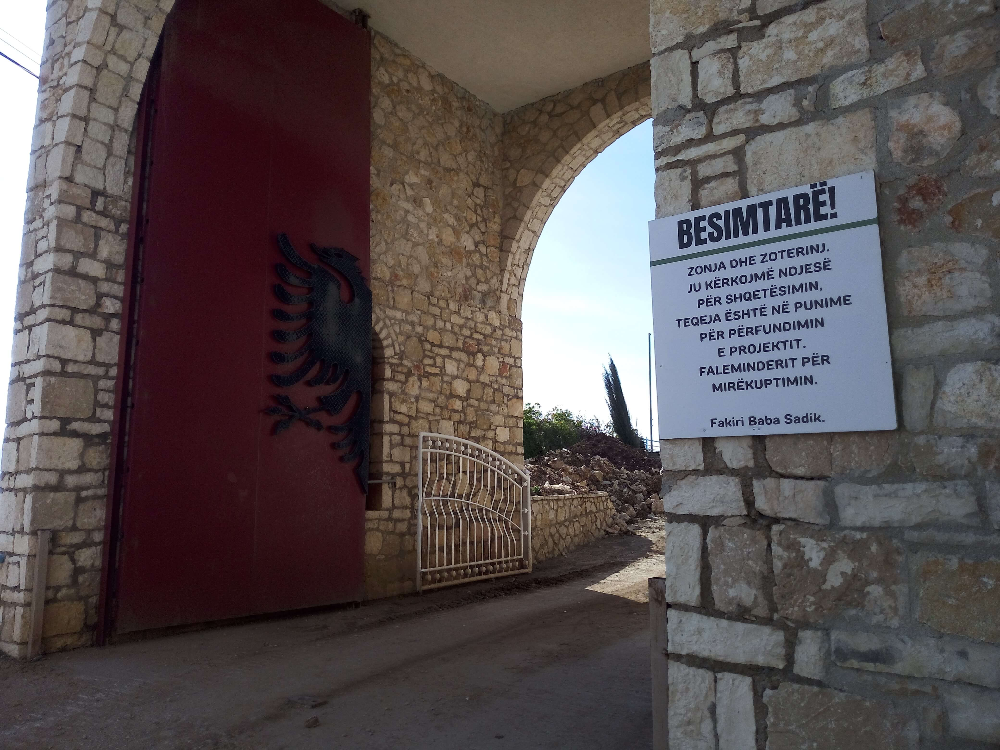

Baba Sadık Tekke
Overlooking the Ionian Sea near Sarandë, Baba Sadık Tekke is a place where spiritual tradition, cultural heritage, and the landscapes of southern Albania come together. Associated with the Bektashi tradition, a distinctive Sufi order with a long history in the Balkans, the tekke reflects a religious and cultural heritage that has helped shape the region's identity. Its hillside setting, with views toward the sea and the nearby island of Corfu, gives the site a striking connection between the spiritual and the natural world.
Beyond its religious significance, the tekke offers a quieter perspective on Sarandë and its surroundings, away from the bustle of the waterfront. Places like this provide an opportunity to appreciate the diverse traditions that form part of Albania's cultural landscape, where faith, history, and local life intersect. These photographs capture my personal impressions of Baba Sadık Tekke and its setting—a place to pause, take in the coastal scenery, and reflect on the layers of heritage found along Albania's southern coast.
My Photo Gallery
Explore my personal photographs of Baba Sadık Tekke, its hillside setting, and the surrounding coastal landscape near Sarandë, Albania.
View All Photos ↗